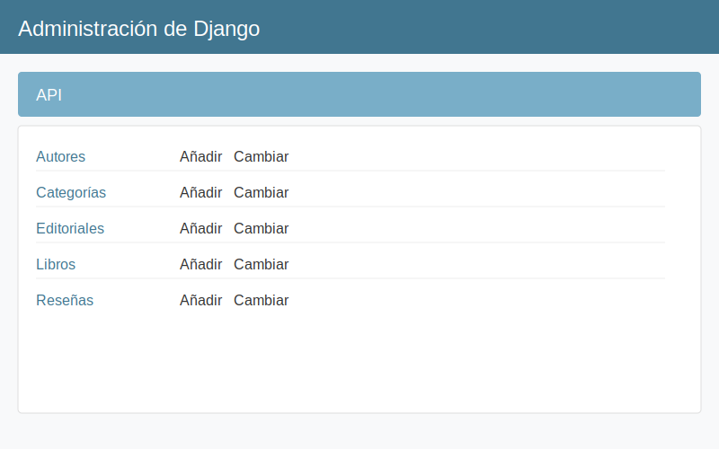

Los modelos en Django son clases de Python que representan tablas en la base de datos. Definen los campos (columnas) y comportamientos de los datos almacenados.
Para este tutorial, crearemos una API para gestionar una biblioteca. Necesitaremos los siguientes modelos:
Abre el archivo api/models.py y reemplaza su contenido con lo siguiente:
from django.db import models
from django.contrib.auth.models import User
from django.core.validators import MinValueValidator, MaxValueValidator
class TimeStampedModel(models.Model):
"""
Modelo abstracto que proporciona campos de timestamp
"""
created = models.DateTimeField(auto_now_add=True)
modified = models.DateTimeField(auto_now=True)
class Meta:
abstract = True
class Autor(TimeStampedModel):
"""
Modelo para representar autores de libros
"""
nombre = models.CharField(max_length=100)
apellidos = models.CharField(max_length=100)
fecha_nacimiento = models.DateField(null=True, blank=True)
biografia = models.TextField(blank=True)
foto = models.URLField(null=True, blank=True)
class Meta:
verbose_name = "Autor"
verbose_name_plural = "Autores"
ordering = ['apellidos', 'nombre']
def __str__(self):
return f"{self.nombre} {self.apellidos}"
@property
def nombre_completo(self):
return f"{self.nombre} {self.apellidos}"
class Categoria(TimeStampedModel):
"""
Modelo para categorías o géneros literarios
"""
nombre = models.CharField(max_length=50, unique=True)
descripcion = models.TextField(blank=True)
class Meta:
verbose_name = "Categoría"
verbose_name_plural = "Categorías"
ordering = ['nombre']
def __str__(self):
return self.nombre
class Editorial(TimeStampedModel):
"""
Modelo para editoriales
"""
nombre = models.CharField(max_length=100, unique=True)
direccion = models.TextField(blank=True)
sitio_web = models.URLField(blank=True)
email = models.EmailField(blank=True)
class Meta:
verbose_name = "Editorial"
verbose_name_plural = "Editoriales"
ordering = ['nombre']
def __str__(self):
return self.nombre
class Libro(TimeStampedModel):
"""
Modelo para libros
"""
titulo = models.CharField(max_length=200)
isbn = models.CharField(max_length=13, unique=True, verbose_name="ISBN")
sinopsis = models.TextField(blank=True)
fecha_publicacion = models.DateField()
portada = models.ImageField(upload_to='portadas/', null=True, blank=True)
paginas = models.PositiveIntegerField(default=1)
idioma = models.CharField(max_length=30, default='Español')
# Relaciones
autores = models.ManyToManyField(Autor, related_name='libros')
categorias = models.ManyToManyField(Categoria, related_name='libros')
editorial = models.ForeignKey(
Editorial,
on_delete=models.CASCADE,
related_name='libros'
)
class Meta:
verbose_name = "Libro"
verbose_name_plural = "Libros"
ordering = ['-fecha_publicacion']
def __str__(self):
return self.titulo
@property
def promedio_valoraciones(self):
resultado = self.resenas.aggregate(models.Avg('valoracion'))
return resultado['valoracion__avg'] or 0
class Resena(TimeStampedModel):
"""
Modelo para reseñas de libros
"""
libro = models.ForeignKey(
Libro,
on_delete=models.CASCADE,
related_name='resenas'
)
usuario = models.ForeignKey(
User,
on_delete=models.CASCADE,
related_name='resenas'
)
titulo = models.CharField(max_length=100)
texto = models.TextField()
valoracion = models.PositiveSmallIntegerField(
validators=[MinValueValidator(1), MaxValueValidator(5)]
)
class Meta:
verbose_name = "Reseña"
verbose_name_plural = "Reseñas"
# Un usuario solo puede hacer una reseña por libro
unique_together = ['libro', 'usuario']
ordering = ['-created']
def __str__(self):
return f"{self.titulo} - {self.libro.titulo} ({"★" * self.valoracion})"pip install Pillow
Para acceder a nuestros modelos desde el panel de administración de Django, necesitamos registrarlos. Abre el archivo api/admin.py y añade lo siguiente:
from django.contrib import admin
from .models import Autor, Categoria, Editorial, Libro, Resena
@admin.register(Autor)
class AutorAdmin(admin.ModelAdmin):
list_display = ('nombre_completo', 'fecha_nacimiento')
search_fields = ('nombre', 'apellidos')
@admin.register(Categoria)
class CategoriaAdmin(admin.ModelAdmin):
list_display = ('nombre',)
search_fields = ('nombre',)
@admin.register(Editorial)
class EditorialAdmin(admin.ModelAdmin):
list_display = ('nombre', 'sitio_web')
search_fields = ('nombre',)
@admin.register(Libro)
class LibroAdmin(admin.ModelAdmin):
list_display = ('titulo', 'isbn', 'fecha_publicacion', 'editorial')
list_filter = ('categorias', 'editorial', 'fecha_publicacion')
search_fields = ('titulo', 'isbn')
filter_horizontal = ('autores', 'categorias')
date_hierarchy = 'fecha_publicacion'
@admin.register(Resena)
class ResenaAdmin(admin.ModelAdmin):
list_display = ('titulo', 'libro', 'usuario', 'valoracion')
list_filter = ('valoracion',)
search_fields = ('titulo', 'libro__titulo')Ahora que hemos definido nuestros modelos, necesitamos crear y aplicar las migraciones para crear las tablas en la base de datos:
# Crear migraciones para nuestra app 'api'
python manage.py makemigrations api
# Aplicar las migraciones
python manage.py migrateDeberías ver una salida similar a esta:
Migrations for 'api':
api/migrations/0001_initial.py
- Create model Autor
- Create model Categoria
- Create model Editorial
- Create model Libro
- Create model Resena
- Add field categorias to libro
- Add field editorial to libro
Operations to perform:
Apply all migrations: admin, api, auth, contenttypes, sessions
Running migrations:
Applying api.0001_initial... OK
Ahora podemos iniciar el servidor de desarrollo y verificar que nuestros modelos aparecen en el panel de administración:
# Iniciar el servidor de desarrollo
python manage.py runserverAbre tu navegador y ve a http://127.0.0.1:8000/admin/. Inicia sesión con el superusuario que creaste anteriormente.
Deberías ver todos nuestros modelos en la sección "API":
Añade un nuevo modelo llamado Prestamo que permita registrar préstamos de libros a usuarios. Debe incluir campos para:
Usa models.ForeignKey para las relaciones, models.DateField para las fechas y models.CharField con choices para el estado.